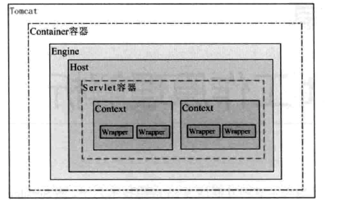
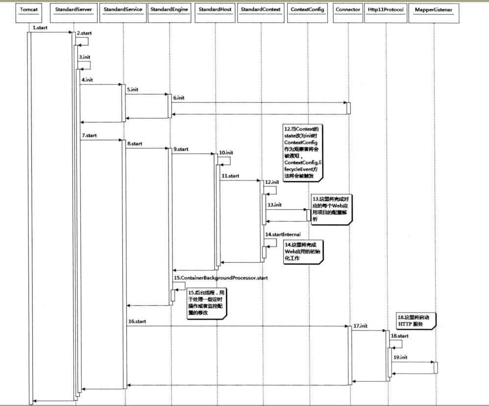

前言
阅读深入分析Java Web技术内幕,对技术点做记录,本篇为第九章节:Servlet工作原理解析;
本章知识点:
1. Servlet容器是如何工作的
2. 一个Web工程在Servlet容器中是如何启动的
3. Servlet容器如何解析你在web.xml中定义的Servlet
4. 用户的请求是如何被分配给指定的servlet的
5. Servlet容器如何管理Servlet生命周期
从Servlet容器说起
Servlet与Servlet容器的关系有点像枪和子弹的关系,虽然它们彼此依存,但又相互独立发展,从技术的角度来说是为了解耦,通过标准化接口来相互协作
在tomcat的容器等级中,Context容器直接管理Servlet在容器中的包装类Wrapper,所以Context容器如何运行将直接影响Servlet的工作方式,Tomcat容器模型如下图:

如图,真正管理Servlet的容器是Context容器,一个Context对应一个Web工程
Servlet容器的启动过程
添加一个Web应用将会创建一个StandardContext容器,并且给这个Context容器设置必要的参数,url和path分别代表这个应用在Tomcat中的访问路径和这个应用实际的物理路径,这两个参数与Tomcat配置中的两个参数是一致的,其中最重要的一个配置是ContextConfig,这个类将会负责整个Web应用配置的解析工作,最后将这个Context容器加到父容器Host中.
接下来将会调用Tomcat的start方法启动Tomcat,Tomcat的启动逻辑是基于观察者模式设计的,所有的容器都会继承Lifecycle接口,它管理着容器的整个生命周期,所有容器的修改和状态的改变都会由它去通知已经注册的观察者()(Listener),Tomcat启动时序图如下;

当Context容器初始化状态设为init时,添加到Context容器的Listener将会被调用,ContextConfig继承了LifecycleListener接口,它是在调用Tamcat.addWebApp时被加入到StandardContext容器中的,ContextConfig类会负责整个Web应用的配置文件的解析工作
ContextConfig的init方法将会主要完成一下工作:
1. 创建用于解析XML配置文件的contextDigester对象
2.读取默认的context.xml配置文件,如果存在则解析它
3.读取默认的Host配置文件,如果存在则解析它
4.读取默认的Context自身的配置文件,如果存在则解析它
5.设置Context的DocBase
ContextConfig的init方法完成后,Context容器就会执行startInternal方法,这个方法的启动逻辑比较复杂,主要包括如下几部分
1. 创建读取资源文件的对象
2. 创建ClassLoader对象
3. 设置应用的工作目录
4. 启动相关的辅助类,如logger,realm,resources等
5. 修改启动状态,通知感兴趣的观察者(Web应用的配置)
6. 子容器的初始化
7. 获取ServletContext并设置必要的参数
8. 初始化”load on startup”的Servlet
Web应用的初始化工作
Web应用的初始化工作是在ContextConfig的configueStart方法中实现的,应用的初始化主要是解析web.xml文件,这个文件描述了一个Web应用的关键信息,也是一个Web应用的入口.
WebXml的configureContext方法清楚的描述了如何将Servlet包装成Context容器中的StandardWrapper,这里有个疑问,为什么要将Servlet包装成StandardWrapper而不直接包装成Servlet对象?这里StandardWrapper是Tomcat容器中的一部分,它具有容器的特征,而Servlet作为一个独立的Web开发标准,不应该强耦合在Toncat中
除了将Servlet包装成StandardWrapper并作为子容器添加到Context中外,其他所有的web.xml属性都被解析到Context中,所以说Context容器才是真正运行servletdeServlet容器,一个Web应用对应一个Context容器,容器的配置属性由应用的web.xml指定,这样我们就能理解web.xml到底起什么作用了.
创建Servlet实例
Servlet对象是如何创建的,以及是如何被初始化的
创建Servlet实例
如果Servlet的load-on-startup配置项大于0,那么在Context容器启动时就会被实例化,在解析配置文件时会读取默认的globalWebXml,在conf下的wen.xml文件中定义了一些默认的配置项,其中定义了两个servlet,分别是org.apache.catalina.servlets.DefaultServlet和org.apache.jasper.servlet.JspServlet,它们的load-on-startup分别是1和3,也就是当tomcat启动时,这两个Servlet就会被启动
初始化Servlet
初始化Servlet在StandardWrapper的initServlet方法中,这个方法很简单,就是调用Servlet的init()方法,同时把包装了StandardWrapper对象的StandardWrapperFacadc作为ServletConfig穿getServlet,如果Servlet关联的是一个JSP文件,那么前面初始化的就是JspServlet,接下来会模拟一次简单的请求,请求调用这个JSP文件,以便编译这个JSP文件为类,并初始化这个类,
Servlet体系结构
与Servlet主动关联的是三个类,分别是ServletConfig,ServletRequest和ServletResponse,这三个类都是通过容器传递给Servlet的,其中ServletConfig在Servlet初始化时就传给Servlet了,而后两个实在请求到达时调用Servlet传递过来的,
ServletConfig和ServletContext对Servlet有何价值呢?这些放大都是为了获取这个Servlet的一些配置属性,而这些配置属性可能在Servlet运行时被用到,`ServletContext又是干什么的呢?Servlet的运行模式是一个典型的”握手型的交互式”,就是这两个模版为了交换数据通常都会准备一个交易场景,这个场景一直跟随这个交易过程直到这个交易完成为止,这个交易场景的初始化是根据这次交易对象指定的参数来定制的,这些指定参数通常就是一个配置类,所以对号入座,交易场景就由ServletContext来描述,而定制的参数集合就由ServletConfig来描述,而ServletRequest和ServletResponse就是交互的具体对象,它们通常都作为运输工具来传递交互结果
Servlet如何工作
Servlet是如何被调用的呢?
在Tomca7中,类org.apapche.tpmcat.util.http.mapper,这个类中保存了tomcat的Container容器中的所有子容器的信息,org.apache.catlina.connector.Request类在进入Container容器之前,Mapper将会根据这次请求的hostname和contextpath将host和context容器设置到Request的mappingData属性中,所有Request进入Container容器之前,对于它要访问哪个自容器就已经确定了.
接下来就是执行Servlet的service方法了,通常情况下,我们自定义servlet并补直接去实现javax.servlet.servlet接口,而是去继承更简单的HttpServlet类或者GenericServlet类,我们可以有选择的覆盖相应的方法去实现要完成的工作,当servlet从servlet容器中移除时,也就表明该Servlet的生命周期结束了,这是Servlet的destroy方法将被调用,做一些扫尾工作
Servlet中的Listener
在整个Tomcat服务器中,Listener使用的非常广泛,它是基于观察者模式设计的,Listener的设计为开发Servlet应用程序提供了一种快捷的手段,能够方便的从另一个纵向维度控制程序和数据.Listener的实现类可以配置在web.xml
标签中,当然也可以在应用程序中动态添加Listener,需要注意的是ServletContextListener在容器启动之后就不能再添加新的,因为它监听的时间已经不会再出现了,掌握这些Listener的使用方法,能够让我们的程序设计的更加灵活
Spring的org.springframework.web.context.ContextLoaderListener就实现了一个ServletContextListener,当容器加载时启动spring容器,ContextLoaderListener在contextInitialized方法中初始化spring容器,有几种办法可以加载spring容器,通过web.xml的标签中配置spring的applicationContext.xml文件.
总结
本章从servlet容器的启动,servlet的初始化及Servlet的体系结构等内容进行一遍过程讲述;